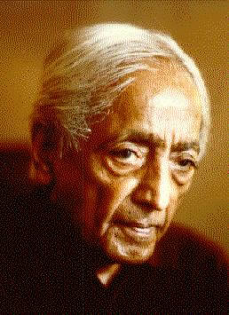

La souffrance est politique, sociale et religieuse ; tout notre être psychologique est dans la confusion, nos chefs politiques et religieux n’y peuvent rien et les livres sacrés politiques et religieux n’y peuvent rien et les livres sacrés ont perdu leur valeur.Vous pouvez consulter la Bhagavad Gitâ ou la Bible ou le dernier traité de politique ou de psychologie et vous verrez qu’ils ont perdu la résonance, la qualité de la vérité. Ce ne sont plus de que de simples mots. Et vous même qui faites profession de répéter ces mots, vous êtes confondus et incertains, cette répétition ne transmet rien. Ainsi, les mots et les livres ont perdu leur signification et vous, qui citez la Bible, Karl Marx ou la Bhagavad Gitâ, étant vous-même dans l’incertitude et la confusion, votre répétition devient mensonge, les mots écrits ne sont plus que propagande, et la propagande n’est pas la vérité. Aussitôt que vous vous mettez à répéter, vous cessez de comprendre votre propre état d’esprit. Vous ne faîtes que cacher votre confusion au moyen de l’autorité que vous accordez à ces mots. Mais ce que nous essayons de faire, ici, c’est comprendre cette confusion et non la recouvrir au moyen de citations. Or, quelle est votre réponse à cela ? Comment réagissez-vous à cette forme de chaos, à cette confuse incertitude de l’existence ? Soyez-en conscients à mesure que j’en parle ; ne suivez pas mes mots mais la pensée qui agit en vous. La plupart d’entre nous ont l’habitude d’être des spectateurs et de ne pas participer à l’action : de lire des livres et de ne pas en écrire : être spectateur est devenu une tradition, notre habitude nationale et universelle ; nous assistons à des parties de football, nous écoutons des politiciens et des orateurs, nous ne sommes là qu’en surplus ; nous avons perdu la capacité de créer et par conséquent nous voulons absorber et que cela soit notre part. Mais si vous ne faîtes qu’assister, si vous n’êtes ici que des spectateurs, vous perdrez totalement le sens de ce discours, car ceci n’est pas une de ces conférences que l’on vous demande d’écouter d’habitude. Je ne vous donnerai aucune des informations que vous pourriez trouver dans une encyclopédie. Mais nous essayerons de suivre nos pensées réciproques et de poursuivre aussi loin, aussi profondément que nous le pourrons, les intentions et les réactions de nos propres sentiments. Je vous prie donc de découvrir votre propre réponse à ce chaos, à cette souffrance ; non pas de savoir quels sont les mots qu’Untel à prononcés mais quelles sont vos réactions personnelles à ce sujet. Votre réaction est celle de l’indifférence si vous retirez un avantage de cette souffrance, de ce chaos, si vous en avez un profit, économique, social, politique ou psychologique. Dans ce cas, cela vous est égal que le désordre se prolonge. Il est évident que plus le monde est troublé et chaotique, plus on recherche la sécurité. Ne l’avons-nous pas remarqué? Du fait de la confusion qui règne dans tous les domaines, vous vous enfermez dans la sécurité que vous donne un compte en banque, ou une idéologie ; ou encore, vous vous livrez à la prière, vous allez au temple, ce qui veut dire que vous vous abstrayez de ce qui se passe dans le monde. Des sectes se forment, de plus en plus nombreuses, de nouveaux « isme » surgissent partout. Car, plus ce chaos est grand, plus vous voulez un chef, un berger qui vous conduise hors de la confusion ; alors vous lisez des textes sacrés ou vous vous adressez au dernier instructeur en date, en encore vous réglez votre conduite selon quelque système de droite ou de gauche, qui vous semble devoir résoudre le problème. Voilà exactement ce qui se produit partout.
Dès que l’on est conscient du désordre, de ce qui « est » exactement, on essaie de s’en évader. Les sectes qui offrent des systèmes pour résoudre la souffrance économique, sociale et religieuse, sont les pires car alors c’est le système qui devient important, non l’homme. Que ce système soit religieux ou social, de droite ou de gauche, c’est lui avec sa philosophie et ses idées qui devient important, non l’homme. Et, pour ces idées, pour ces idéologies, on est tout prêt à sacrifier l’humanité entière. C’est exactement cela qui se produit dans le monde. Je ne vous donne pas ici une interprétation personnelle de ce qui se passe : observez autour de vous et vous verrez que c’est la vérité. Ce sont les systèmes qui sont devenus importants, et, de ce fait, l’homme – vous et moi – a perdu toute valeur et ceux qui ont le contrôle des systèmes (religieux ou économique, de droite ou de gauche) assument l’autorité, le pouvoir, et par conséquent vous sacrifient, vous l’individu. Voilà exactement ce qui se passe.
Mais quelle est la cause de cette misère ? Comment cette confusion, cette souffrance, se sont-elles produites, non seulement psychologiquement, mais dans le monde extérieur?Comment sont nées cette peur et cette attente de la troisième guerre mondiale, de cette guerre qui est en train d’éclater? Cela indique, évidemment un écroulement des valeurs morales et spirituelles et la glorification des valeurs sensorielles, des produits de la pensée, de la main ou de la machine ? Plus nous donnons d’importances aux valeurs sensorielles, aux objets, plus grande est la confusion. Encore une fois ceci n’est pas une théorie. Vous n’avez guère besoin de consulter des ouvrages pour vous rendre compte que vos valeurs, vos richesses, votre existence économique et sociale sont basées sur des choses faites par la main ou la pensée. Ainsi nous vivons et fonctionnons et avons notre être plongé dans des valeurs sensorielles, ce qui veut dire que les choses de la pensée, de la main ou de la machine, sont devenues importantes. Le résultat de cette importance donnée aux choses est que les croyances sont devenues prédominantes dans le monde. N’est-ce pas cela qui se produit partout ?
Ainsi, accordant de plus en plus d’importance aux valeurs qui relève des sens, nous créons une confusion de plus en plus grande ; et, nous trouvant au milieu de cette confusion, nous essayons de nous en évader par différentes voies, religieuses, économiques ou sociales, ou par l’ambition, le pouvoir ou la recherche de la réalité. Mais le réel est tout prêt de vous. Vous n’avez pas à le chercher. L’homme qui cherche la réalité ne la trouvera jamais. La vérité est en ce qui « est » - et c’est cela sa beauté. Mais dès l’instant où vous la concevez, dès l’instant que vous la chercher, vous commencez à lutter ; et l’homme qui lutte ne peut pas comprendre. Voilà pourquoi il nous faut être en observation, immobiles, passivement lucide. Nous voyons alors que notre existence, notre action, sont toujours dans le champ de la destruction, de la douleur ; comme une vague, la confusion et le chaos déferlent sur nous. Il n’y a pas d’intervalles dans la confusion de l’existence.
Tout ce que nous faisons à présent semble conduire au chaos, à la souffrance, à un état malheureux. Observez votre propre vie et vous verrez que votre existence est toujours au bord de la douleur. Notre travail, notre activité sociale, notre politique, les réunions des nations pour enrayer la guerre, tout développe la guerre. La destruction suit l’existence dans son sillage ; tout ce que nous faisons mêne à la mort. Voilà exactement ce qui a lieu.
Pouvons-nous nous mettre tout de suite fin à cette misère et ne plus être emportés par la vague de confusion et de douleur ? De grands instructeurs tels que le Bouddha ou le Christ sont venus ; ils ont acceptés la foi des autres, alors qu’ils étaient peut-être, eux-même, affranchis de la confusion et de la douleur. Mais ils n’ont jamais mis fin à la douleur, ils n’ont jamais empêchés la confusion de se produire. La douleur se perpétue, la confusion se perpétue. Et si, voyant ce désordre social et économique, vous vous réfugiez dans ce qu’on appelle la vie religieuse et abandonnez le monde, vous pouvez peut-être avoir ainsi le sentiment d’atteindre des grands maîtres, mais le monde continue dans sa destruction chaotique, dans l’incessante souffrance des riches et des pauvres. Ainsi votre problème à vous et à moi, est de savoir si nous pouvons sortir de cette misère instantannément, si, vivant dans le monde, mais refusant d’en faire partie, nous pouvons aider les autres à sortir de la confusion, non pas dans l’avenir, non pas demain, mais maintenant. Tel est notre problème. La guerre arrive, probablement plus destructrice, plus horrible que les précédentes. Certes nous ne pouvons pas l’éviter car ses causes sont trop puissantes et trop directement en action. Mais vous et moi pouvons percevoir immédiatement cette confusion et cette misère. La perception ne peut avoir lieu que dans le présent, mais si vous vous dites : je le ferai demain, la vague de confusion vous submerge et vous demeurez dans la confusion.
Est’il possible de parvenir à cet état où l’on perçoit instantanément la vérité, et où, par conséquent, on met fin à la confusion ? Je dis que c’est possible et que c’est la seule voie. Je dis – et ce n’est ni une supposition ni une croyance – que cela peut être fait et que cela doit être fait. Provoquer cette extraordinaire révolution – qui ne consiste pas à se débarrasser des capitalistes et à mettre un autre groupe au pouvoir – engendrer cette merveilleuse transformation, qui est la seule vraie révolution, voila le problème. Ce qu’en général on appelle révolution n’est que la modification ou le prolongement de la droite, selon les idées de la gauche. La gauche, en somme, n’est que la continuation de la droite sous une forme modifiée. Si la droite est basée sur des valeurs sensorielles, la gauche n’est qu’une persistance de ces mêmes valeurs, différentes seulement en degré et en expression. Par conséquent, la vraie révolution ne peut avoir lieu que lorsque vous, l’individu, devenez lucide dans vos rapports avec autrui. Ce que vous êtes dans vos rapport avec autrui, avec votre femme, votre enfant, votre employeur, votre voisin, constitue la société. La société en soi n’existe pas. La société est ce que vous et moi, dans nos relations réciproques, avons créé ; c’est la projection extérieure de tous nos états psychologiques intérieurs . Donc si vous et moi ne nous comprenons pas nous-mêmes, transformer le monde extérieur, lequel est une projection de l’intérieur, est une entreprise vaine : les modifications ou transformations qu’on peut y apporter ne sont pas réelles. Si je suis dans la confusion en ce qui concerne mes rapports humains, je crée une société qui est la réplique de cette confusion, l’expression intérieure de ce que je suis. Ce fait est évident mais nous pouvons en discuter. Nous pouvons discuter la question de savoir si la société, l’expression extérieure, m’a produit ou si c’est moi qui ai produit la société.
N’est-ce donc pas un fait évident que ce que je suis dans mes rapports avec autrui crée la société et que, si je ne me transforme pas moi-même radicalement il ne peut y avoir aucune transformation dans la fonction essentielle de la société ? Lorsque nous comptons sur un système pour transformer la société, nous ne faisons qu’éluder la question ; un système ne peut pas modifier l’homme, c’est l’homme qui altère toujours le système, ainsi que le démontre l’Histoire. Tant que dans mes rapports avec vous, je ne me comprends pas moi-même, je suis la cause du chaos, des malheurs, des destructions, de la peur, de la brutalité. Et me comprendre n’est pas une affaire de temps ; je puis me comprendre en ce moment même. Si je dis : je me comprendrais demain, j’introduis le chaos, mon action est destructrice. Dès que je dis : je me comprendrai, j’introduis l’élément temps et je suis emporté par la vague de destruction. La compréhension est « maintenant » et non demain. Demain est pour l’esprit paresseux, apathique, indifférent. Si une chose vous intéresse, vous la faites instantanément, il y a une compréhension immédiate, une immédiate transformation. Si vous ne changez pas maintenant vous ne changerez jamais parce que le changement remis au lendemain ne sera qu’une modification et non une transformation. Une transformation ne peut se produire qu’immédiatement ; la révolution est maintenant, non demain.
Lorsque cela arrive, vous êtes complètement sans problèmes, car alors le moi ne se préoccupe pas de lui-même ; alors vous êtes au-delà de la vague de destruction.
La Première et dernière Liberté, 1955